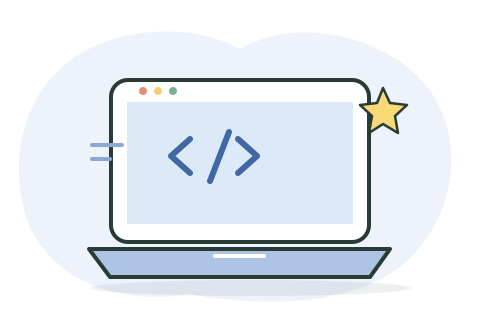

Aprende desarrollo web
Lecciones introductorias para entender cómo se construyen sitios web.
Abrir guía MDN en español ↗Retos breves para usar tecnología con criterio, creatividad y cuidado.

Aprende a organizar instrucciones, usar condiciones y corregir algoritmos con ejemplos escolares.
Abrir módulo · 10 min → 🤖Formula mejores solicitudes, revisa respuestas y protege tus datos personales.
Abrir módulo · 10 min → 🔐Detecta mensajes sospechosos y practica formas seguras de cuidar tus cuentas.
Abrir módulo · 10 min → 🧠Convierte tareas grandes en pasos, fija prioridades y organiza pausas realistas.
Abrir módulo · 10 min → 🔎Revisa autoría, fecha, evidencia y contexto antes de compartir una publicación.
Abrir módulo · 10 min → 🛠️Organiza una explicación clara, añade fuentes y crea tu guía para descargar.
Abrir módulo · 15 min →Cómo usarlo: abre un módulo, revisa la explicación, resuelve el reto y marca el aprendizaje. Las lecciones principales funcionan sin conexión; los enlaces externos requieren internet.
Explora estas guías junto con los retos locales. Los módulos de la plataforma también se pueden completar sin conexión.
Lecciones introductorias para entender cómo se construyen sitios web.
Abrir guía MDN en español ↗Explora competencias para comprender, evaluar y diseñar con inteligencia artificial.
Marco para estudiantes · UNESCO ↗Revisa recomendaciones para proteger cuentas, datos y dispositivos al navegar.
Recomendaciones de MinTIC ↗Material de YouTube sobre habilidades digitales.
Cargando videos del módulo…
Los resultados vienen de YouTube. El docente debe revisar cada video antes de proyectarlo en el salón.